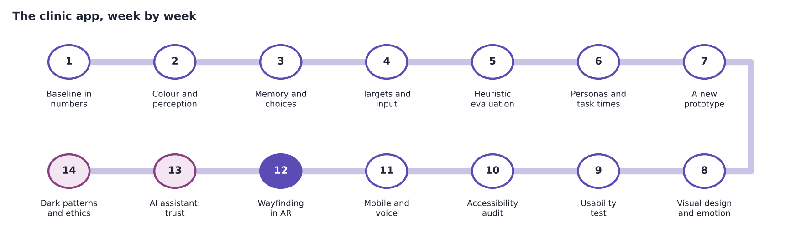
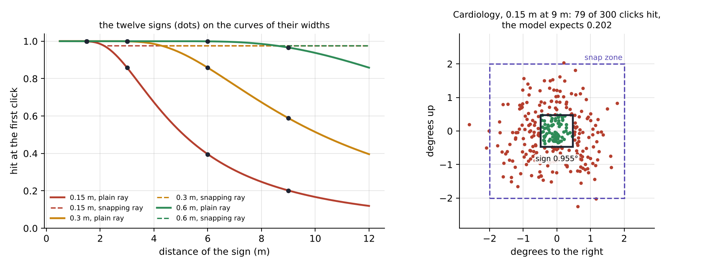
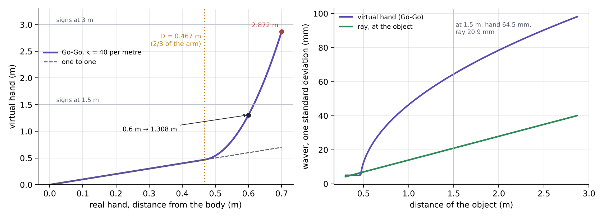
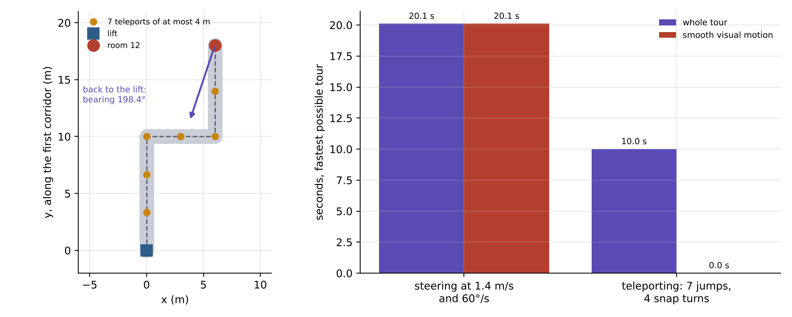
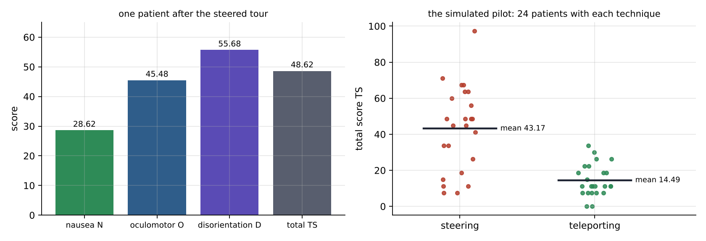
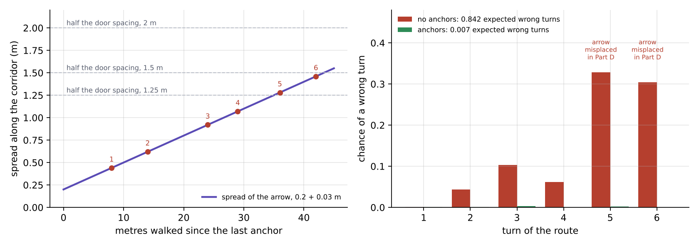
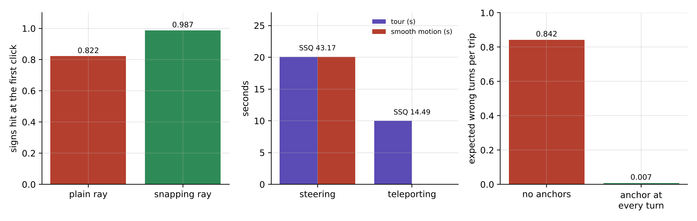

Overview
Weeks 1 to 11 designed the clinic app for screens that patients hold or touch. A hospital, however, is a building in three dimensions (3D), and patients lose their way in it. This week leaves the flat screen. It selects objects at a distance with a ray and with a virtual hand, travels through a virtual hospital and measures the sickness that virtual motion can cause. It then guides patients with arrows of augmented reality (AR) and models the drift that misplaces them. The clinic app reaches stage 12, wayfinding in the hospital with augmented reality. The Python step works with vectors in three dimensions. The week closes with guidance that people follow even when it is wrong.
Week at a glance
flowchart LR A["Real, augmented and virtual"] --> B["Pointing with a ray"] B --> C["Reaching with a virtual hand"] C --> D["Travel"] D --> E["Presence and cybersickness"] E --> F["Augmented reality in the corridor"] F --> G["Interface clinic"] G --> H["The human side"] H --> S["The clinic app, stage 12"] S --> I["Toward human-AI interaction"]
Every method on this page is also written as Python code in the Colab notebook of the week. Its code is divided into numbered sections. Each orange box on this page names the section whose code carries out what the text above the box explains. The box says what to run and what to look at in that section, and its button opens the Colab notebook at that place. The games, the practice parts and the self-assessment of the week are in the interactive lab. Each violet box opens one part of the interactive lab. The part ends with a link back to its box on this page, and the Colab notebook is always opened from the orange boxes here.
Python step 12: Vectors in three dimensions
Python code in the Colab notebook, right after Section 0 (setup). Open the Colab notebook and run this step cell by cell: It consists of short pieces of Python code with their explanations, a quick check and three exercises. Topics: Vectors, lengths and unit vectors · The dot product and the angle between two directions · The cross product and the normal of a surface · A ray and the plane it hits.
The step stores points and directions as NumPy arrays of three numbers [1]. It computes the length of a vector and the angle between two directions, the normal of a surface and the point where a ray meets a plane. The sections of the week use these pieces for rays, virtual hands, routes and arrows. Students who have never programmed start with the start-here notebook of the course.
Weeks 1 to 10 measured the booking flow, fitted it to human abilities, tested it with patients and removed the barriers that an audit of accessibility found. Week 11 moved the app onto the phone and added voice.
This week takes the app into the building. Stage 12 adds a virtual tour of the hospital before the visit and arrows of augmented reality on the day of the visit.

Real, augmented and virtual: The reality-virtuality continuum
LaViola and colleagues describe 3D interaction as interaction in which the tasks of the user are performed directly in a real or a virtual space of three dimensions [2]. They organise its techniques around a few universal tasks. Selection and manipulation pick objects and change them, navigation moves the user and keeps the way in mind, and system control issues commands. This week takes up the first two in the hospital.
Milgram and Kishino placed displays on a reality-virtuality continuum [3]. It runs from the real environment at one end to a fully virtual environment at the other. Everything in between is mixed reality. Augmented reality adds virtual objects to a world that is mainly real, and augmented virtuality adds real objects to a world that is mainly virtual.
Azuma defined augmented reality by three properties [4]. It combines the real and the virtual, it is interactive in real time, and it is registered in three dimensions. A virtual arrow must stay on the real floor when the head moves, and a label must stay on its door. An arrow that floats free is a picture, not augmented reality.
Slater and Wilbur separated two words that are often mixed up [5]. Immersion describes the technology objectively: How much of the senses it covers, how widely it surrounds the user and how vivid it is. Presence is a state of consciousness that may come with immersion, the sense of being in a place. The same headset immerses every user equally, but not every user feels present.
Scene: From the corridor to a virtual world. A patient stands in a corridor of the hospital, next to a nurse. Step along the reality-virtuality continuum with the four buttons and watch which parts stay real. The readout names the step, what is virtual in it and its use in the clinic.
In the scene, the patient and the nurse stay real until the last step. Augmented reality registers the arrow with the floor and the label with the door. Augmented virtuality replaces the corridor by a virtual model and keeps the people. Virtual reality (VR) replaces everything, for example with a calm world during a painful treatment.
Check your understanding. Through glasses, a patient sees a virtual arrow lying on the real floor of the corridor. Where does this lie on the continuum?
- Which tasks of a visit to the hospital would gain from a fully virtual environment, and which need the real one?
- A video call shows a real doctor inside a virtual waiting room. Where on the continuum does it lie?
- Should a patient ever be fully immersed while waiting in the real hospital?
Selecting at a distance: Pointing with a ray
The clinic app plans a virtual tour of the hospital. Before the visit, patients put on a headset or open the tour on a screen, walk the route and point at the signs of the departments to hear the way. Two metaphors dominate selection at a distance. A virtual pointer casts a ray from the hand, and a virtual hand reaches for the object.
Bowman and Hodges compared such techniques for grabbing and manipulating remote objects [6]. With ray-casting, grabbing was easy but manipulation was difficult. Techniques that extend the arm made manipulation natural. Kopper and colleagues modelled pointing at a distance and found that the time is best described by angles [7]. The angular size of the target has a much larger effect than the angular amplitude of the movement, and the difficulty grows quadratically rather than linearly.
Part A of the interactive lab places twelve signs in the atrium of the virtual tour, at distances from 1.5 to 9 m. A tremor makes the ray scatter, as the hand of a patient would. You select the signs with a plain ray and then with a ray that snaps to a sign.
Interactive lab, Part A. Signs at a distance in 3D: Twelve signs of the atrium, selected with a plain ray and with a snapping ray. The results can be copied into the Colab notebook.
A ray is precise in angle, not in metres. The angular width of a square sign is the visual angle of Week 2. Suppose that the direction of the ray scatters by \(\sigma\) degrees in each direction. A click then hits the sign with the probability of the square button of Week 4, with angles in place of millimetres:
\(w\) is the width of the sign and \(d\) its distance from the eyes, both in metres. \(\omega\) is its angular width in degrees, \(\sigma\) the scatter of the ray in degrees and \(\Phi\) the cumulative standard normal distribution. The clinic assumes \(\sigma = 0.8\) degrees for a hand that holds a controller, an illustrative value.
→ These formulas with numbers, step by step: Lab Part B, first calculator, steps 1 to 4.
A worked example. The sign of cardiology is 0.15 m wide and hangs 9 m away, so \(\omega = 2\arctan(0.15/18) = 0.955\) degrees. Then \(\omega/(2\sigma) = 0.955/1.6 = 0.597\), \(\Phi(0.597) = 0.7247\) and \(P_1 = 2 \times 0.7247 - 1 = 0.4494\), so \(P = 0.4494^2 = 0.202\). Four clicks in five miss. At 1.5 m, the same sign spans 5.725 degrees and is hit with the probability 0.999.
A ray can snap: When it passes within \(s\) degrees of the centre of a sign in both directions, it bends to the sign. The sign then acts as a target of \(\max(\omega, 2s)\) degrees. With \(s = 2\), the sign of cardiology becomes a target of 4 degrees: \(4/1.6 = 2.5\), \(\Phi(2.5) = 0.9938\), \(P_1 = 0.9876\) and \(P = 0.975\). Over the twelve signs of the atrium, the mean probability of a hit at the first click rises from 0.822 to 0.987. Snapping has a price where signs stand close together: The nearest sign in the zone may not be the one the patient meant.

Check your understanding. A sign spans 0.955 degrees, and the ray scatters by 0.8 degrees. Which change helps most?
Interactive lab, Part B. The ray and the hand step by step: Two calculators with presets, the hit probability of a plain and a snapping ray, and the Go-Go mapping of the next section.
Python code in the Colab notebook, Section 1. Open Section 1 of the Colab notebook and run it. The functions angular_width, p_hit and p_hit_snap carry out the formulas of this section for the twelve signs, and 100,000 simulated rays confirm them. A figure draws the probabilities and a cloud of clicks. Paste the results of Part A into MY_SELECTION to compare your hits with the model and to fit your times.
- Which signs of a real hospital would be hard to point at, and why?
- A snapping ray can pick the wrong sign when two signs stand close together. How should the tour show which sign it picked?
- Should a virtual tour enlarge distant signs, although the real signs keep their size?
Reaching with a virtual hand: The Go-Go technique
A virtual hand follows the real hand one to one. It grabs, moves and turns objects as the real hand would, but it reaches only as far as the arm. Poupyrev and colleagues let the virtual arm grow [8]. Within a distance \(D\) of the body, the virtual hand follows the real hand. Beyond it, the virtual hand moves outward faster than the real hand, along a quadratic curve:
\(R_r\) is the distance of the real hand from the body and \(R_v\) that of the virtual hand. Poupyrev and colleagues chose \(D\) as two thirds of the length of the arm, and \(k\) sets how fast the virtual arm grows. The clinic assumes an arm of 0.7 m and \(k = 40\) per metre, illustrative values. The slope of the curve, \(g = 1 + 2k(R_r - D)\) beyond \(D\), is its gain.
→ This formula with numbers, step by step: Lab Part B, second calculator, steps 1 to 6.
A worked example. \(D = \tfrac{2}{3} \times 0.7 = 0.467\) m. With the real hand at 0.6 m, \(R_r - D = 0.133\) and \(0.133^2 = 0.0177\), so \(k \times 0.0177 \)\({}= 40 \times 0.0177 \)\({}= 0.708\) and \(R_v = 0.6 + 0.708 = 1.308\) m. The stretched arm of 0.7 m reaches 2.872 m, so nine of the twelve signs remain out of reach.
The reach has a price. The gain multiplies every small movement of the real hand. At 0.6 m, \(g \)\({}= 1 \)\({}+ 2 \times 40 \times 0.133 \)\({}= 11.64\), so a waver of 5 mm of the real hand becomes 58.2 mm. To reach the signs at 1.5 m, the real hand must be 0.616 m from the body, where the gain is 12.89. The virtual hand then wavers by 64.5 mm and lands on the small sign with the probability 0.570, against 0.999 for the ray.
Animation. A patient seen from the side reaches toward two signs at 1.5 and 3 m. Move the real hand: The virtual hand of Go-Go follows it one to one up to \(D\) and then runs ahead. Its cloud shows the waver of the hand times the gain. Switch to the ray to see its cone of scatter at the signs. The small chart traces the mapping.

For manipulation, the picture turns around. Bowman and Hodges found that objects grabbed with a ray were hard to turn and to bring closer, while extending the arm made this natural [6]. They combined both: The ray selects the object, and the hand manipulates it once it is selected.
Check your understanding. The real hand is 0.6 m from the body, with \(D = 0.467\) m and \(k = 40\) per metre. How far away is the virtual hand?
Python code in the Colab notebook, Section 2. Open Section 2 of the Colab notebook and run it. The functions gogo, gain and real_for carry out the mapping of this section. The code finds the signs within reach and compares the virtual hand with the ray on them, and a figure draws the mapping and both errors.
- The virtual tour lets patients pick up a model of the heart and turn it. Which technique would you choose, and why?
- Why might a patient with a tremor prefer the ray to the virtual hand?
- Where in a real hospital would a ray be confusing?
Travel in a virtual hospital: Steering and teleporting
LaViola and colleagues divide navigation into travel, the motor part of moving the viewpoint, and wayfinding, the cognitive part of knowing where to go [2]. In the virtual tour, the body of the patient stays in the chair while the view moves. Steering glides the view continuously in the chosen direction. Teleporting jumps to a point that the user selects.
Bowman, Koller and Hodges evaluated such techniques in immersive virtual environments [9]. Techniques that teleport users instantly were linked to more disorientation. After a jump, their subjects needed 4.35 s on average to find a target, against 2.91 to 3.49 s after continuous motion. Bozgeyikli and colleagues compared Point & Teleport with walking in place and with a joystick [10]. Users point where they want to be and are moved there. It involves no visible motion between the two points, so it is not expected to cause motion sickness. Their 16 users found it fun and easy to use, while an added choice of direction made the experience worse.
The time of a tour follows from the route. Steering covers the length at the speed \(v\) and the turns at the rate \(\omega_t\). Teleporting needs \(\lceil L_i / r \rceil\) jumps for a corridor of length \(L_i\) and a range of \(r\). Snap turns rotate the view in steps of 45 degrees:
\(L\) is the length of the route and \(\Theta\) the sum of its turns. The clinic assumes \(v = 1.4\) m/s and \(\omega_t = 60\) degrees per second. A jump reaches up to \(r = 4\) m and takes \(t_a = 1.2\) s to aim, and each of the \(n_q\) snap turns takes \(t_q = 0.4\) s. All of these are illustrative values.
A worked example. The tour from the lift to room 12 runs 10, 6 and 8 m with two turns of 90 degrees. Steering takes \(24/1.4 + 180/60 = 17.143 + 3 = 20.1\) s, all of it smooth visual motion. Teleporting takes \(3 + 2 + 2 = 7\) jumps and four snap turns: \(7 \times 1.2 \)\({}+ 4 \times 0.4 \)\({}= 8.4 \)\({}+ 1.6 \)\({}= 10.0\) s, without any smooth motion.
Arriving is not enough: The patient should know where the start lies. A pointing task measures this. The user points back to the start, and the error is the angle between the pointed and the true direction. With unit vectors \(u\) and \(v\), it is \(\theta = \arccos(u \cdot v)\), the dot product of Python step 12. From room 12, the lift lies at a bearing of 198.4 degrees, measured clockwise from the first corridor. Pointing at 205 degrees misses by 6.6 degrees.

Check your understanding. Why can teleporting leave users disoriented?
Interactive lab, Part C. Through the virtual hospital in 3D: The tour from the lift to room 12, steered and teleported, with a pointing task at the end. The results can be copied into the Colab notebook.
Python code in the Colab notebook, Section 3. Open Section 3 of the Colab notebook and run it. The functions tour_steer and tour_teleport carry out the time model, and vectors give the direction back to the lift. pointing_error uses the dot product. Paste the results of Part C into MY_TRAVEL to compare your tours with the model.
- Which technique would you offer to a patient who has never used a headset?
- How could a teleporting tour help patients keep their bearings?
- Should the virtual tour copy the walking speed of the real patient, for example with a rollator?
Presence and cybersickness
Slater proposed two components behind realistic responses in virtual reality [11]. The place illusion is the feeling of being in a place, although the user knows that it is not real. It is limited by how well the system follows the movements of the body. The plausibility illusion is the feeling that what happens is really happening. It depends on events that respond to the user and on a credible scenario. When both occur, people respond to the virtual environment as if it were real.
Presence can be used for care. Hoffman and colleagues gave two adolescent patients virtual reality during the care of their burn wounds [12]. The control was a video game. The first patient rated his pain on scales of 100 mm. In his first session, sensory and affective pain each fell by 80 mm, anxiety by 58 mm and the time spent thinking about pain by 93 mm. The authors called the results preliminary.
Virtual motion can also make users sick. In the virtual tour, the eyes report motion while the balance organs of the inner ear report none. Kennedy and colleagues built the Simulator Sickness Questionnaire (SSQ) from 1,119 pairs of questionnaires filled in before and after sessions in 10 simulators of the navy [13]. Sixteen symptoms are rated from 0 to 3, and a factor analysis grouped them into three subscales: Nausea, oculomotor symptoms of the eyes and disorientation. A symptom can count for two subscales:
| Symptom | N | O | D | Symptom | N | O | D |
|---|---|---|---|---|---|---|---|
| General discomfort | 1 | 1 | Difficulty concentrating | 1 | 1 | ||
| Fatigue | 1 | Fullness of head | 1 | ||||
| Headache | 1 | Blurred vision | 1 | 1 | |||
| Eyestrain | 1 | Dizzy (eyes open) | 1 | ||||
| Difficulty focusing | 1 | 1 | Dizzy (eyes closed) | 1 | |||
| Increased salivation | 1 | Vertigo | 1 | ||||
| Sweating | 1 | Stomach awareness | 1 | ||||
| Nausea | 1 | 1 | Burping | 1 |
The ratings of the symptoms of each subscale add up to the raw sums \([N]\), \([O]\) and \([D]\). These are weighted, and their sum gives the total score (TS):
The constants of the conversion have no particular meaning of their own [13].
A worked example. After the steered tour, a patient rates eyestrain as moderate (2), and general discomfort, fatigue, difficulty focusing, nausea, fullness of head, blurred vision and stomach awareness as slight (1). Then \([N] = 1 + 1 + 1 = 3\), \([O] = 1 + 1 + 2 + 1 + 1 = 6\) and \([D] = 1 + 1 + 1 + 1 = 4\). The scores are \(N = 9.54 \times 3 = 28.62\), \(O = 7.58 \times 6 = 45.48\), \(D = 13.92 \times 4 = 55.68\) and \(TS = 3.74 \times 13 = 48.62\).
Sickness can be reduced without removing the motion. Fernandes and Feiner narrowed the field of view (FOV) subtly while the view moved and widened it again when it stopped [14]. Their 30 participants explored a virtual environment on two days, once with and once without these restrictors. The restrictors reduced sickness significantly, and most participants did not notice them.
The clinic piloted its tour in a simulation of 24 patients for each technique, with illustrative chances of each symptom. The mean total score was 43.17 after steering and 14.49 after teleporting. Welch's test of Week 9 gives \(t = 5.59\) and \(p < 0.001\).

Check your understanding. A patient rates eyestrain as moderate (2) and every other symptom as none. What is the total score \(TS\)?
Python code in the Colab notebook, Section 4. Open Section 4 of the Colab notebook and run it. The function ssq carries out the scoring of this section and is checked on the worked example. The function pilot simulates the pilot of the virtual tour, and Welch's test compares the techniques. A figure draws the profile of the patient and the pilot.
- A calm virtual world helped patients during painful wound care. Which other moments in a hospital could it help?
- Should the virtual tour stop on its own when a patient reports nausea?
- The restrictors worked best when nobody noticed them. Is it right to change what users see without telling them?
Augmented reality in the corridor: Registration and wayfinding
Finding the way in a hospital is hard and costly. Devlin reviewed the research on wayfinding in healthcare facilities [15]. It is often considered only after the building is complete. The review cites an often quoted estimate that problems of wayfinding cost one university hospital $220,000 a year. The layout of the building and visible cues such as signs and landmarks shape how well people find their way.
An app of augmented reality can draw the way onto the real floor. Rehman and Cao built such an app for a phone and for Google Glass and compared both with a paper map [16]. The glasses were perceived as more accurate, but their time and workload did not differ significantly from the phone. Both digital aids led to shorter navigation times and lower workload than the paper map.
The arrow helps only where it is registered with the real corridor. Azuma named registration and sensing errors among the biggest problems of building such systems [4]. A phone that tracks its own motion adds up small errors, so the position of the arrow drifts with the metres walked. An anchor, such as a marker on the wall or a known feature of a junction, resets it. The clinic models the spread of the arrow along the corridor and the chance that it lies nearer a door than the turn:
\(m\) is the distance walked since the last anchor. The spread at an anchor is \(\sigma_0 = 0.2\) m, and the drift is \(r = 0.03\) per metre walked, both illustrative values. \(s\) is the distance from the turn to the doors before and after it. An arrow that lies more than \(s/2\) from the turn lies nearer a door.
→ These formulas with numbers, step by step: Lab Part D, calculator, steps 1 to 3.
A worked example. The route from the main entrance to cardiology has six turns. Without anchors, the patient has walked \(m = 42\) m at the last turn, so \(\sigma = 0.2 + 0.03 \times 42 = 1.46\) m. With doors 3.0 m before and after the turn, \(s/(2\sigma) = 3.0/2.92 = 1.027\), \(\Phi(1.027) = 0.8478\) and \(P_{\text{wrong}} \)\({}= 2 \times (1 - 0.8478) \)\({}= 0.304\). With an anchor at the previous turn, \(m = 6\) m, \(\sigma = 0.38\) m and \(P_{\text{wrong}}\) falls below 0.0001.
Over the six turns, the expected wrong turns per trip fall from 0.842 without anchors to 0.007 with an anchor at every turn. The share of trips without any wrong turn rises from 0.376 to 0.993.

Check your understanding. After 36 m without an anchor, the spread is 1.28 m, and the doors lie 2.5 m from the turn. Which statement holds?
Interactive lab, Part D. Arrows in the corridor in 3D: The six turns of the route through augmented reality glasses, without and with anchors, and a calculator of the drift. The results can be copied into the Colab notebook.
Python code in the Colab notebook, Section 5. Open Section 5 of the Colab notebook and run it. The functions sigma_at and p_wrong carry out the formulas of this section for the six turns. The code rebuilds the arrows of Part D with the same random numbers, and a figure draws the spread and the chances. Paste the results of Part D into MY_ROUTE to count the misplaced arrows that you followed.
- Where in your faculty building would an arrow of augmented reality need an anchor?
- Should the arrow fade when the app is unsure of its position, or should it stay?
- Which landmarks of a hospital could serve as anchors without any markers?
Interface clinic: The tour and the arrows, before and after
The four pairs below show views of the virtual tour and of the glasses of augmented reality before and after a redesign. Each pair names the problem and the measure of this week behind it.
Interface clinic: Signs at a distance in the virtual tour. The atrium of the virtual tour. The patient points a ray from the controller at a sign.
BeforeSmall signs and a plain ray
A sign of 0.15 m at 9 m spans 0.955 degrees. With a scatter of 0.8 degrees, the plain ray hits it at the first click with the probability 0.202.
AfterA ray that snaps, and a highlight
Within 2 degrees of a sign, the ray bends to it, and the sign lights up with its name. The probability rises to 0.975, and the mean of the twelve signs to 0.987.
Interface clinic: The arrow at the turn. Glasses of augmented reality at the fifth turn of the route to cardiology, 36 m after the entrance.
BeforeAn arrow that drifted
Without an anchor, the spread of the arrow has grown to 1.28 m. It lies nearer the door before the turn with the probability 0.329, and here it does.
AfterAnchored at the turn, and naming the sign
A marker at the junction resets the arrow, so its spread stays below 0.5 m. The text names the real sign, which the patient can check.
Interface clinic: Moving through the virtual tour. The corridor of the virtual tour during a movement.
BeforeSteering at full view
The view glides for 20.1 s with no motion of the body. In the simulated pilot, the mean total score of the SSQ was 43.17.
AfterTeleports, snap turns and a map
Jumps of up to 4 m and turns of 45 degrees take 10.0 s with no smooth motion, and the mean score of the pilot fell to 14.49. The map keeps the bearings that jumps can lose.
Interface clinic: Information in the field of view. Glasses of augmented reality in the corridor, with a patient in a wheelchair ahead.
BeforeA panel fixed to the head
The panel moves with the head and covers the corridor ahead, where people and obstacles appear. Here it hides the wheelchair.
AfterAn arrow below, the text on the wall
The arrow sits low in the view, and the text is registered on the wall beside the corridor. The way ahead stays clear.
- Which of the four problems would a patient notice first, and which only in the numbers?
- The panel fixed to the head was easy to build. Why do designers still build it?
The human side: Bodies in virtual and augmented worlds
The same headset does not affect everyone in the same way. Munafo, Diedrick and Stoffregen let seated participants play one of two games in a headset for up to 15 minutes [17]. In the first experiment, 22 percent reported motion sickness, and in the second 56 percent. In the second, 77.78 percent of the women and 33.33 percent of the men became sick. The way the participants swayed while standing before the session already differed between those who later became sick and those who did not.
Guidance also changes what people learn. In the study of Rehman and Cao, both digital aids led to worse memory of the route than the paper map [16]. A patient who follows arrows may arrive without learning the way. Patients with disorders of balance or vision need the tour as an option, never as the only way, in the spirit of Week 10.
A patient follows the arrows of his phone to the laboratory every month. One morning, the battery dies at the entrance. He stands in the hall and cannot recall a single turn. The signs, which he never had to read, look new to him.
- Who in a clinic should not be offered a headset at all?
- How could an app of augmented reality help patients learn the way instead of only following it?
The clinic app, stage 12: Wayfinding in the hospital with augmented reality
Stage 12 takes the clinic app into the building in three parts. A virtual tour of the hospital comes before the visit, with signs that are selected at a distance. Arrows of augmented reality follow on the day of the visit.
In the virtual tour, the ray snaps to the signs. The mean probability of a hit at the first click rises from 0.822 to 0.987, and the far small sign of cardiology from 0.202 to 0.975. The tour moves by teleports with snap turns. It takes 10.0 s instead of 20.1 s and contains no smooth visual motion. In the simulated pilot, the mean total score of the SSQ fell from 43.17 to 14.49. A map of the route stays at hand, because jumps can disorient.
On the day, the arrows of augmented reality are anchored at every turn. The expected wrong turns per trip fall from 0.842 to 0.007, and 0.993 of the trips contain none. Each arrow also names the sign above its turn, so that patients can check it against the building.
| Measure | Before | Stage 12 |
|---|---|---|
| Signs hit at the first click (mean of twelve) | 0.822, plain ray | 0.987, snapping ray |
| The far small sign of cardiology | 0.202 | 0.975 |
| Tour from the lift to room 12 | 20.1 s of steering, all smooth motion | 10.0 s of teleports, no smooth motion |
| Mean total score of the SSQ in the simulated pilot | 43.17 | 14.49 |
| Expected wrong turns per trip to cardiology | 0.842 without anchors | 0.007 with an anchor at every turn |
| Trips without a wrong turn | 0.376 | 0.993 |

| Question of stage 12 | Answer | Where |
|---|---|---|
| How reliably are signs selected at a distance? | 0.987 at the first click with a snapping ray | Section 1, Parts A and B |
| Can a virtual hand reach the signs? | Only up to 2.872 m, and with a large waver | Section 2, Part B |
| How should the tour move? | By teleports with snap turns: 10.0 s, no smooth motion | Section 3, Part C |
| How sick does the tour make patients? | A mean total score of 14.49 instead of 43.17 in the simulated pilot | Section 4, Part E |
| Do the arrows lead the right way? | 0.007 expected wrong turns per trip with anchors | Section 5, Part D |
Stage 12 rests on models with illustrative values, such as the scatter of the ray, the drift of the arrows and the chances of the pilot. A test with patients in the hospital, as in Week 9, would check them. Week 13 adds an assistant of artificial intelligence (AI) that suggests a department, and asks how far patients should trust it.
Check your understanding. Without anchors, the six turns of the route have chances of a wrong turn that add up to 0.842. What does this number mean?
Interactive lab, Part E. Stage 12 by hand: The scores of the SSQ for a patient after the steered tour.
Python code in the Colab notebook, Section 6. Open Section 6 of the Colab notebook and run it. The code collects the results of stage 12 in the dictionary STAGE12. It holds the selection of the signs, the reach of the virtual hand, the two tours with the pilot and the arrows without and with anchors. A figure draws the results.
Your application
The questions of this week apply to every application in three dimensions. How large are its targets in degrees, how does it move its users, and how far can its overlays drift? The Colab notebook holds an application switch with four further applications: A museum guide, picking in a warehouse, training in a factory and a tour of a campus.
Python code in the Colab notebook, Section 7. Open Section 7 of the Colab notebook, set APP to one of the five names in the comment and run the cell. The code computes the angular width of the target of the application and the hit probability of both rays. It also computes the drift of its guidance and the time of its virtual tour.
Toward human-AI interaction
Guidance in space is often planned by software that people cannot inspect. Robinette and colleagues let participants meet a robot guide in a harmless task [18]. Minutes later, in a simulated emergency with artificial smoke and fire alarms, the participants could follow it or not. All 26 participants followed the robot, although half of them had watched it perform poorly in the task minutes before. In exploratory studies, most people did not leave the way they had come in, even when the robot pointed into a dark room with no visible exit.
Part D of the interactive lab asked the same question on a small scale: Did you follow an arrow that lay at the wrong door? Week 3 called the tendency to follow automation against other evidence automation bias.
Suppose that the clinic lets a system of artificial intelligence plan the route of each patient. It predicts crowded corridors and reroutes patients around them. Its arrows will look as certain as the anchored arrows of stage 12, even when its prediction is wrong. Week 13 asks how a system can show how sure it is, and how users can learn when to rely on it.
- Why might people follow a guide that they have seen fail?
- How should the arrows of the clinic app look when the system is unsure of its position?
Review cards
Select a card to turn it over.
References
[1] Harris, C. R., Millman, K. J., van der Walt, S. J., Gommers, R., Virtanen, P., Cournapeau, D., Wieser, E., Taylor, J., Berg, S., Smith, N. J., Kern, R., Picus, M., Hoyer, S., van Kerkwijk, M. H., Brett, M., Haldane, A., Fernández del Río, J., Wiebe, M., Peterson, P., Gérard-Marchant, P., Sheppard, K., Reddy, T., Weckesser, W., Abbasi, H., Gohlke, C., & Oliphant, T. E. (2020). Array programming with NumPy. Nature, 585(7825), 357-362. https://doi.org/10.1038/s41586-020-2649-2
[2] LaViola, J. J., Jr., Kruijff, E., McMahan, R. P., Bowman, D. A., & Poupyrev, I. (2017). 3D User Interfaces: Theory and Practice (2nd ed.). Addison-Wesley. https://www.pearson.com/en-us/subject-catalog/p/3d-user-interfaces-theory-and-practice/P200000000424/9780134034324
[3] Milgram, P., & Kishino, F. (1994). A taxonomy of mixed reality visual displays. IEICE Transactions on Information and Systems, E77-D(12), 1321-1329. https://global.ieice.org/en_transactions/information/10.1587/e77-d_12_1321/_p
[4] Azuma, R. T. (1997). A survey of augmented reality. Presence: Teleoperators and Virtual Environments, 6(4), 355-385. https://doi.org/10.1162/pres.1997.6.4.355
[5] Slater, M., & Wilbur, S. (1997). A framework for immersive virtual environments (FIVE): Speculations on the role of presence in virtual environments. Presence: Teleoperators and Virtual Environments, 6(6), 603-616. https://doi.org/10.1162/pres.1997.6.6.603
[6] Bowman, D. A., & Hodges, L. F. (1997). An evaluation of techniques for grabbing and manipulating remote objects in immersive virtual environments. In Proceedings of the 1997 Symposium on Interactive 3D Graphics (pp. 35-38, 182). ACM. https://doi.org/10.1145/253284.253301
[7] Kopper, R., Bowman, D. A., Silva, M. G., & McMahan, R. P. (2010). A human motor behavior model for distal pointing tasks. International Journal of Human-Computer Studies, 68(10), 603-615. https://doi.org/10.1016/j.ijhcs.2010.05.001
[8] Poupyrev, I., Billinghurst, M., Weghorst, S., & Ichikawa, T. (1996). The go-go interaction technique: Non-linear mapping for direct manipulation in VR. In Proceedings of the 9th Annual ACM Symposium on User Interface Software and Technology (pp. 79-80). ACM. https://doi.org/10.1145/237091.237102
[9] Bowman, D. A., Koller, D., & Hodges, L. F. (1997). Travel in immersive virtual environments: An evaluation of viewpoint motion control techniques. In Proceedings of IEEE 1997 Annual International Symposium on Virtual Reality (pp. 45-52). IEEE. https://doi.org/10.1109/VRAIS.1997.583043
[10] Bozgeyikli, E., Raij, A., Katkoori, S., & Dubey, R. (2016). Point & teleport locomotion technique for virtual reality. In Proceedings of the 2016 Annual Symposium on Computer-Human Interaction in Play (pp. 205-216). ACM. https://doi.org/10.1145/2967934.2968105
[11] Slater, M. (2009). Place illusion and plausibility can lead to realistic behaviour in immersive virtual environments. Philosophical Transactions of the Royal Society B: Biological Sciences, 364(1535), 3549-3557. https://doi.org/10.1098/rstb.2009.0138
[12] Hoffman, H. G., Doctor, J. N., Patterson, D. R., Carrougher, G. J., & Furness, T. A., III. (2000). Virtual reality as an adjunctive pain control during burn wound care in adolescent patients. Pain, 85(1-2), 305-309. https://doi.org/10.1016/S0304-3959(99)00275-4
[13] Kennedy, R. S., Lane, N. E., Berbaum, K. S., & Lilienthal, M. G. (1993). Simulator Sickness Questionnaire: An enhanced method for quantifying simulator sickness. The International Journal of Aviation Psychology, 3(3), 203-220. https://doi.org/10.1207/s15327108ijap0303_3
[14] Fernandes, A. S., & Feiner, S. K. (2016). Combating VR sickness through subtle dynamic field-of-view modification. In 2016 IEEE Symposium on 3D User Interfaces (3DUI) (pp. 201-210). IEEE. https://doi.org/10.1109/3DUI.2016.7460053
[15] Devlin, A. S. (2014). Wayfinding in healthcare facilities: Contributions from environmental psychology. Behavioral Sciences, 4(4), 423-436. https://doi.org/10.3390/bs4040423
[16] Rehman, U., & Cao, S. (2017). Augmented-reality-based indoor navigation: A comparative analysis of handheld devices versus Google Glass. IEEE Transactions on Human-Machine Systems, 47(1), 140-151. https://doi.org/10.1109/THMS.2016.2620106
[17] Munafo, J., Diedrick, M., & Stoffregen, T. A. (2017). The virtual reality head-mounted display Oculus Rift induces motion sickness and is sexist in its effects. Experimental Brain Research, 235(3), 889-901. https://doi.org/10.1007/s00221-016-4846-7
[18] Robinette, P., Li, W., Allen, R., Howard, A. M., & Wagner, A. R. (2016). Overtrust of robots in emergency evacuation scenarios. In 2016 11th ACM/IEEE International Conference on Human-Robot Interaction (HRI) (pp. 101-108). IEEE. https://doi.org/10.1109/HRI.2016.7451740